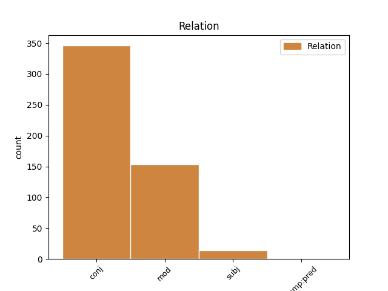
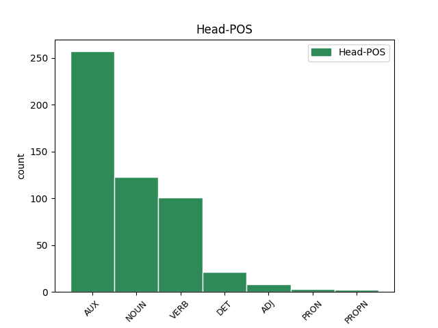
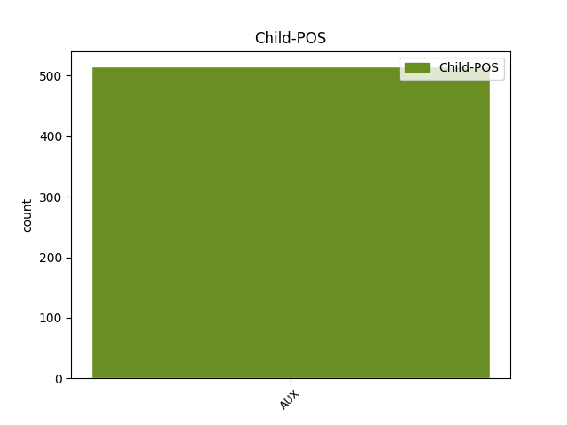

Distribution of features within this leaf



Agreement Rules sorted by frequency.
- When the dependent token is the conjunct(conj) of the head token, and the dependent token is AUX.
1 Kraljičino _ _ _ _ 0 _ _ _
2 zaničevanje _ _ _ _ 0 _ _ _
3 je biti AUX Va-r3s-n Mood=Ind|Number=Sing|Person=3|Polarity=Pos|Tense=Pres|VerbForm=Fin 0 _ _ _
4 kardinala _ _ _ _ 0 _ _ _
5 Rohana _ _ _ _ 0 _ _ _
6 zelo _ _ _ _ 0 _ _ _
7 bolelo _ _ _ _ 0 _ _ _
8 , _ _ _ _ 0 _ _ _
9 zato _ _ _ _ 0 _ _ _
10 je biti AUX Va-r3s-n Mood=Ind|Number=Sing|Person=3|Polarity=Pos|Tense=Pres|VerbForm=Fin 3 conj _ Dep=12|Rel=PPart
11 dolgo _ _ _ _ 0 _ _ _
12 razmišljal _ _ _ _ 0 _ _ _
13 , _ _ _ _ 0 _ _ _
14 kako _ _ _ _ 0 _ _ _
15 bi _ _ _ _ 0 _ _ _
16 si _ _ _ _ 0 _ _ _
17 pridobil _ _ _ _ 0 _ _ _
18 njeno _ _ _ _ 0 _ _ _
19 milost _ _ _ _ 0 _ _ _
20 . _ _ _ _ 0 _ _ _
1 Ob _ _ _ _ 0 _ _ _
2 pregledu _ _ _ _ 0 _ _ _
3 kakšnih _ _ _ _ 0 _ _ _
4 šest _ _ _ _ 0 _ _ _
5 tisoč _ _ _ _ 0 _ _ _
6 listov list NOUN Ncmpg Case=Gen|Gender=Masc|Number=Plur 0 _ _ _
7 , _ _ _ _ 0 _ _ _
8 na _ _ _ _ 0 _ _ _
9 katerih _ _ _ _ 0 _ _ _
10 so biti AUX Va-r3p-n Mood=Ind|Number=Plur|Person=3|Polarity=Pos|Tense=Pres|VerbForm=Fin 6 mod _ Dep=11|Rel=PPart
11 ostali _ _ _ _ 0 _ _ _
12 zapisani _ _ _ _ 0 _ _ _
13 njegove _ _ _ _ 0 _ _ _
14 misli _ _ _ _ 0 _ _ _
15 , _ _ _ _ 0 _ _ _
16 razglabljanja _ _ _ _ 0 _ _ _
17 in _ _ _ _ 0 _ _ _
18 prebliski _ _ _ _ 0 _ _ _
19 , _ _ _ _ 0 _ _ _
20 ugotovimo _ _ _ _ 0 _ _ _
21 , _ _ _ _ 0 _ _ _
22 da _ _ _ _ 0 _ _ _
23 se _ _ _ _ 0 _ _ _
24 čedalje _ _ _ _ 0 _ _ _
25 bolj _ _ _ _ 0 _ _ _
26 predaja _ _ _ _ 0 _ _ _
27 dejavnostim _ _ _ _ 0 _ _ _
28 , _ _ _ _ 0 _ _ _
29 ki _ _ _ _ 0 _ _ _
30 bi _ _ _ _ 0 _ _ _
31 jih _ _ _ _ 0 _ _ _
32 danes _ _ _ _ 0 _ _ _
33 imenovali _ _ _ _ 0 _ _ _
34 znanstvene _ _ _ _ 0 _ _ _
35 ali _ _ _ _ 0 _ _ _
36 tehnološke _ _ _ _ 0 _ _ _
37 . _ _ _ _ 0 _ _ _
1 Kar _ _ _ _ 0 _ _ _
2 je biti AUX Va-r3s-n Mood=Ind|Number=Sing|Person=3|Polarity=Pos|Tense=Pres|VerbForm=Fin 7 subj _ Dep=7|Rel=Sb
3 videti _ _ _ _ 0 _ _ _
4 navzven _ _ _ _ 0 _ _ _
5 predano _ _ _ _ 0 _ _ _
6 , _ _ _ _ 0 _ _ _
7 je biti VERB Va-r3s-n Mood=Ind|Number=Sing|Person=3|Polarity=Pos|Tense=Pres|VerbForm=Fin 0 _ _ _
8 v _ _ _ _ 0 _ _ _
9 resnici _ _ _ _ 0 _ _ _
10 vam _ _ _ _ 0 _ _ _
11 v _ _ _ _ 0 _ _ _
12 korist _ _ _ _ 0 _ _ _
13 , _ _ _ _ 0 _ _ _
14 saj _ _ _ _ 0 _ _ _
15 pridobite _ _ _ _ 0 _ _ _
16 . _ _ _ _ 0 _ _ _
1 Nekaj _ _ _ _ 0 _ _ _
2 si _ _ _ _ 0 _ _ _
3 si biti AUX Va-r2s-n Mood=Ind|Number=Sing|Person=2|Polarity=Pos|Tense=Pres|VerbForm=Fin 5 comp:pred _ Dep=6|Rel=PPart
4 vendarle _ _ _ _ 0 _ _ _
5 moral morati VERB Vmpp-sm Aspect=Imp|Gender=Masc|Number=Sing|VerbForm=Part 0 _ _ _
6 misliti _ _ _ _ 0 _ _ _
7 . _ _ _ _ 0 _ _ _
Disagree Examples:
1 V _ _ _ _ 0 _ _ _
2 bolnišnici _ _ _ _ 0 _ _ _
3 so _ _ _ _ 0 _ _ _
4 že _ _ _ _ 0 _ _ _
5 pred _ _ _ _ 0 _ _ _
6 časom _ _ _ _ 0 _ _ _
7 pripravili _ _ _ _ 0 _ _ _
8 vse _ _ _ _ 0 _ _ _
9 potrebno _ _ _ _ 0 _ _ _
10 za _ _ _ _ 0 _ _ _
11 negovanje _ _ _ _ 0 _ _ _
12 bolnikov bolnik NOUN Ncmpg Case=Gen|Gender=Masc|Number=Plur 0 _ _ _
13 , _ _ _ _ 0 _ _ _
14 pri _ _ _ _ 0 _ _ _
15 katerih _ _ _ _ 0 _ _ _
16 je biti AUX Va-r3s-n Mood=Ind|Number=Sing|Person=3|Polarity=Pos|Tense=Pres|VerbForm=Fin 12 mod _ Dep=17|Rel=PPart
17 bilo _ _ _ _ 0 _ _ _
18 zdravljenje _ _ _ _ 0 _ _ _
19 končano _ _ _ _ 0 _ _ _
20 . _ _ _ _ 0 _ _ _
1 Zato _ _ _ _ 0 _ _ _
2 je _ _ _ _ 0 _ _ _
3 včeraj _ _ _ _ 0 _ _ _
4 sklicala _ _ _ _ 0 _ _ _
5 sestanek sestanek NOUN Ncmsan Animacy=Inan|Case=Acc|Gender=Masc|Number=Sing 0 _ _ _
6 , _ _ _ _ 0 _ _ _
7 na _ _ _ _ 0 _ _ _
8 katerem _ _ _ _ 0 _ _ _
9 so biti AUX Va-r3p-n Mood=Ind|Number=Plur|Person=3|Polarity=Pos|Tense=Pres|VerbForm=Fin 5 mod _ Dep=10|Rel=PPart
10 ugotavljali _ _ _ _ 0 _ _ _
11 , _ _ _ _ 0 _ _ _
12 kako _ _ _ _ 0 _ _ _
13 bi _ _ _ _ 0 _ _ _
14 prišli _ _ _ _ 0 _ _ _
15 do _ _ _ _ 0 _ _ _
16 najprimernejše _ _ _ _ 0 _ _ _
17 rešitve _ _ _ _ 0 _ _ _
18 . _ _ _ _ 0 _ _ _
1 Najprej _ _ _ _ 0 _ _ _
2 je _ _ _ _ 0 _ _ _
3 treba _ _ _ _ 0 _ _ _
4 najti _ _ _ _ 0 _ _ _
5 vzrok vzrok NOUN Ncmsan Animacy=Inan|Case=Acc|Gender=Masc|Number=Sing 0 _ _ _
6 , _ _ _ _ 0 _ _ _
7 zaradi _ _ _ _ 0 _ _ _
8 katerega _ _ _ _ 0 _ _ _
9 so biti AUX Va-r3p-n Mood=Ind|Number=Plur|Person=3|Polarity=Pos|Tense=Pres|VerbForm=Fin 5 mod _ Dep=11|Rel=PPart
10 se _ _ _ _ 0 _ _ _
11 pojavili _ _ _ _ 0 _ _ _
12 . _ _ _ _ 0 _ _ _
1 Ljubiteljev _ _ _ _ 0 _ _ _
2 konjeniškega _ _ _ _ 0 _ _ _
3 športa _ _ _ _ 0 _ _ _
4 je biti VERB Va-r3s-n Mood=Ind|Number=Sing|Person=3|Polarity=Pos|Tense=Pres|VerbForm=Fin 0 _ _ _
5 namreč _ _ _ _ 0 _ _ _
6 v _ _ _ _ 0 _ _ _
7 Angliji _ _ _ _ 0 _ _ _
8 še _ _ _ _ 0 _ _ _
9 vedno _ _ _ _ 0 _ _ _
10 veliko _ _ _ _ 0 _ _ _
11 in _ _ _ _ 0 _ _ _
12 za _ _ _ _ 0 _ _ _
13 neposredni _ _ _ _ 0 _ _ _
14 prenos _ _ _ _ 0 _ _ _
15 dirke _ _ _ _ 0 _ _ _
16 Grand _ _ _ _ 0 _ _ _
17 National _ _ _ _ 0 _ _ _
18 jih _ _ _ _ 0 _ _ _
19 niso biti AUX Va-r3p-y Mood=Ind|Number=Plur|Person=3|Polarity=Neg|Tense=Pres|VerbForm=Fin 4 conj _ Dep=20|Rel=PPart
20 želeli _ _ _ _ 0 _ _ _
21 prikrajšati _ _ _ _ 0 _ _ _
22 . _ _ _ _ 0 _ _ _
1 Tudi _ _ _ _ 0 _ _ _
2 zato _ _ _ _ 0 _ _ _
3 s _ _ _ _ 0 _ _ _
4 tovrstnim _ _ _ _ 0 _ _ _
5 nasiljem _ _ _ _ 0 _ _ _
6 ne _ _ _ _ 0 _ _ _
7 ravnatelji _ _ _ _ 0 _ _ _
8 ne _ _ _ _ 0 _ _ _
9 učitelji _ _ _ _ 0 _ _ _
10 nimajo imeti VERB Vmpr3p-y Aspect=Imp|Mood=Ind|Number=Plur|Person=3|Polarity=Neg|Tense=Pres|VerbForm=Fin 0 _ _ _
11 izkušenj _ _ _ _ 0 _ _ _
12 in _ _ _ _ 0 _ _ _
13 ravnateljica _ _ _ _ 0 _ _ _
14 ljubljanske _ _ _ _ 0 _ _ _
15 šole _ _ _ _ 0 _ _ _
16 je biti AUX Va-r3s-n Mood=Ind|Number=Sing|Person=3|Polarity=Pos|Tense=Pres|VerbForm=Fin 10 conj _ Dep=17|Rel=PPart
17 ravnala _ _ _ _ 0 _ _ _
18 prav _ _ _ _ 0 _ _ _
19 , _ _ _ _ 0 _ _ _
20 ko _ _ _ _ 0 _ _ _
21 se _ _ _ _ 0 _ _ _
22 je _ _ _ _ 0 _ _ _
23 nemudoma _ _ _ _ 0 _ _ _
24 po _ _ _ _ 0 _ _ _
25 pomoč _ _ _ _ 0 _ _ _
26 obrnila _ _ _ _ 0 _ _ _
27 na _ _ _ _ 0 _ _ _
28 Svetovalni _ _ _ _ 0 _ _ _
29 center _ _ _ _ 0 _ _ _
30 za _ _ _ _ 0 _ _ _
31 otroke _ _ _ _ 0 _ _ _
32 , _ _ _ _ 0 _ _ _
33 mladostnike _ _ _ _ 0 _ _ _
34 in _ _ _ _ 0 _ _ _
35 starše _ _ _ _ 0 _ _ _
36 . _ _ _ _ 0 _ _ _